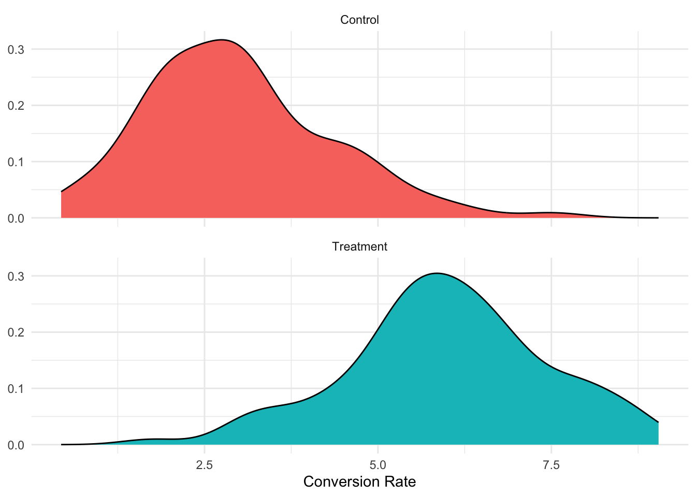

prior_heads = rbinom(n = 2, size = 1000, prob = 0.5)
prior_heads[1]/sum(c(prior_heads[1], prior_heads[2]))[1] 0.4772727Bayesianism has been on the to do list for awhile since well they make the prettiest plots. More importantly we get more coherent measures of uncertainty and are closer to how we actually think of the world. There are lots of broad applications for Bayesianism in the private industry. The betting market for sports and how we think about teams is effectively Bayesian. We incorporate a lot of information about the observable parts of a team like schedule, roster talent, coaching, and guesses about the probablity that the roster will stay healthy. These are all priors we have about things that relate to the success of the team going into the season. As the season progresses and we get data our prior will update. In the case of the Saints this year our prior updated to make them a good team after one game moving our guess about the number of games they would win this year to probably more than their projected win total. With the second win this may have not moved our prior much at all. However, as attrition set in then our prior shifted a little bit back toward the pre-season total so on and so forth.
Bayesianism a formalization of this process by encoding our beliefs in probability distributions. Our prior is really just our belief about the distribution and plausible range of values for that variable before ever seeing the data. So if we were to set a prior for a coin we would set the prior as somthing kind of loosy goosy as this
prior_heads = rbinom(n = 2, size = 1000, prob = 0.5)
prior_heads[1]/sum(c(prior_heads[1], prior_heads[2]))[1] 0.4772727So in this case we are just stating that the probability of heads is about 50 percent over a thousand trials assuming a fair coin. However, lets say that we know the coin is biased in a known way that makes it come up heads 61% of the time. We could then set our prior that it willl come up heads as this
prior_heads_biased = rbinom(n = 2, size = 1000, prob = .61)This is not neccessarily all that unique from a standard null hypothesis which we covered in the opening “chapter” of this book. It is the combination of the prior and the posterior which makes the Bayesian machine go brrr.
The posterior can we operationalized along these lines
\[ Posterior = \frac{\text{Probability of Data} \times Prior}{\text{Mean probability of Data}} \]
Where we are averaging the probability of the prior. If we derive this out more formally we will see that the posterior is actually proportional to the prodct of the prior and the probability of the data. The posterior distribution contains the relative plausibility of different parameter values, conditional on the data and model. We can overcome a bad prior given an infinite amount of data, but this process will be inefficient and critically we will never reach infinite data. Priors in Bayesian inference are important computationally as well as substantively.
Setting a prior is one of the hardest things in Bayesian statistics and the subject a large and rich part of the literature. I think one really important thing to adjudicate is what a prior really is. That way we can reinforce the importance of setting a good one, what to check, and how to check it.
According to Gelman et al. (2013) we can conceptualize the prior distribution along two different lines. There is the population interpretation. This is a little frequentisty but is definitely helpful. Lets say that we have some pseudo population of parameters that the candidate parameter \(\beta\) is drawn from. For simplicity sake lets draw \(\beta\) from as standard normal where we overlay the overall distribution
library(tidyverse)
sim_data = \(beta_val = 0, beta_variance = 1, n = 100){
sim_dat = tibble(beta_values = rnorm(n, mean = beta_val, sd = beta_variance),
beta_mean = rep(beta_val, length.out = n),
beta_variance = rep(beta_variance, length.out = n))
return(sim_dat)
}
pop_sims = map(c(5, 10, 15), \(x) sim_data(beta_val = x)) |>
list_rbind()
wide_version = pop_sims |>
mutate(id = row_number()) |>
pivot_wider(names_from = beta_mean, values_from = beta_values, names_glue = 'mean_{beta_mean}')
plot_dat = wide_version |>
mutate(pop_total = pop_sims$beta_values) |>
pivot_longer(cols = mean_5:mean_15) |>
mutate(nice_labs = as.factor(str_to_title(str_replace(name, '_', " "))),
nice_labs = fct_relevel(nice_labs, 'Mean 5', 'Mean 10', 'Mean 15'))
ggplot(plot_dat) +
geom_density(mapping = aes(x = value, y = after_stat(ncount), fill = nice_labs),
stat = "bin", size = 0.5,
alpha = 0.7) +
geom_density(mapping = aes(x = pop_total, y = after_stat(ncount)),
alpha = 0.9,
color = "gray30", size = 0.6,
stat = "bin",
direction = "mid") +
facet_wrap(vars(nice_labs)) +
MetBrewer::scale_fill_met_d(name = 'Lakota') +
theme_minimal() +
labs(fill = NULL, y = 'Scaled Count') +
theme(legend.position = 'none')
So in the population interpretation of priors we have kind of weird population by design. Depending on what ‘draw’ we get our prior could be N(5,1) or it could be N(10,1) where plausible values center around 5 or 10 with a standard deviation of 1. In this setting we are thinking about given the data what is a reasonable set of values that we would expect to see. In this setting we are kind of explicitly using a bit of frequentist logic to bridge the gap. However, instead of assuming that all values between 5-15 are equally plausible we are expliciltly stating that the mass of the distribution will be around some value and the amount of variation that we will have. This could be useful if we have a huge amount of experiments or results banked and we can imagine our plausible beta values as drawn from some distribution of the experiments.
In the state of knowledge interpretation of priors we are still using our subject matter expertise of the phenomena, but there may not be a good population to ground our priors on. Say we are launching a completly new product or expanding our product into a new market. We may have some idea about what we are likely to see but we don’t have the same reference population that we can draw from, but we have at least some idea of what our expectation should be.
An important thing to note about Bayes Rule is that we can think of Bayes rules along these lines
\[ Posterior = \frac{\overbrace{P(A)}^{\text{Prior}} \times \overbrace{\text{Probability of Data}}^{Likelihood}}{\text{Average Probability of Data}} \]
What this means is that effectively the posterior is a bit of a compromise between our data and our beliefs as the size of the data get bigger our prior will have less of an influence on our posterior distribution, but it will never completely evaporate.
Most of the time people say just use your substantive knowledge. But that’s generally not helpful if you haven’t done that in a statistical setting. Lets take it step by step. First we generally outline what we link the distribution of our dependen variable would be. For our outcome variable we may think that its a normal distribution so we would write it like this
\[ Outcome \sim Normal(\mu, \sigma) \]
If it is a binary outcome we would write it like this
\[ Outcome \sim Bernouli(\text{Number of Trials},\text{Probability true}) \]
The next step is is we have to think about our generative model. So to ground our analysis it helps to start from a DAG. We generally have beliefs about an intervention in the world. It helps to start from a causal model because we generally have beliefs about what parts of the model we care about. That way we can start thinking about the potential relationships in our data. We then have to think of the plausible ranges for these values and what the uncertainty around them.
\[ \begin{align} \textbf{Outcome} \sim N(\mu, \sigma) \\[8pt] \textbf{Predictor One} \sim N (3, 1) \end{align} \]
Where we are shifting the mean a bit and putting a somewhat conservative prior. This is generally fine but there are lots of priors we can set.
Lets say that out in the real world by some miracle of god we have a true normal distribution where the mean is zero and the standard deviation is 1. We can set informative, weakly informative, flat/non-informative prior, and a conjugate prior. Conjugate priors are a little bit harder to visualize with the below schema because a conjugate prior is something that also relies on the posterior. Meaning that if it turns out the posterior of our mean comes from the same family then it turns out that our prior is conjugate.
n = 1000
prior_df = tibble(
pop = rnorm(n),
`Kinda Flat` = rnorm(n, sd = 5),
informative = rnorm(n, mean = 0.5, sd = 1)
) |>
pivot_longer(everything(),
names_to = 'prior',
values_to = 'value'
)
ggplot(prior_df, aes(x = value, fill = prior)) +
geom_density(alpha = 0.5) +
scale_fill_manual(values = c('Kinda Flat' = '#a40000', 'informative' = '#00b7a7', 'pop' = '#ffcd12')) +
theme_minimal()
This could be better but you kind of get the idea. A flat/uninformative prior is at best a bit like saying “the parameter of interest is somewhere between \(-\infty\) and \(\infty\).” My flat prior in the plot is more akin to a weakly informative prior is more akin to having a little more humility. A weakly informative prior is more akin to like we wouldn’t expect the treatment effect to be all that big but it is not outside of the realm of possibility. Priors can get pretty crazy because well the real world is messy and making simplyfying assumptions is hard. This is why (most) Bayesians will simulate the world first before even touching the data.
Simulations are superpowerful because we get to play god in a way that we don’t normally get to do as social scientists. We can really simply simulate that you have roughly a 50/50 chance of getting heads or tails.
coin_flips = replicate(10000, sample(c('heads', 'tails'), 1))
coin_flips |>
as_tibble() |>
group_by(value) |>
summarise(counts = n()) |>
ungroup() |>
mutate(probs = counts/sum(counts))# A tibble: 2 × 3
value counts probs
<chr> <int> <dbl>
1 heads 5018 0.502
2 tails 4982 0.498While this is intuitive we can see how this varies by number of flips.
num_flips = 100
flips = sample(c('heads', 'tails'), size = num_flips, replace = TRUE)
coin_flips = tibble(
heads_frequency = cumsum(flips == 'heads')/1:num_flips,
flip_number = 1:num_flips
)
ggplot(coin_flips, aes(x = flip_number, y = heads_frequency)) +
geom_line() +
geom_hline(yintercept = 0.5) +
scale_y_continuous(limits = c(0,1)) +
labs(x = 'Flip Number', y = 'Proportion of Heads') +
theme_minimal()
In expectation we start getting closer and closer to 50% heads. Neat, but why should we care? Well we can test how well our prior does on various situations with a known truth.
Lets take a randomized control trial with unobserved confounding using the really excellent DeclareDesign package.
options(scipen = 999)
library(DeclareDesign)
rct <-
declare_model(N = 100,
U = rnorm(N),
potential_outcomes(Y ~ 0.2 * Z + U)) +
declare_inquiry(ATE = mean(Y_Z_1 - Y_Z_0)) +
declare_assignment(Z = complete_ra(N, prob = 0.5)) +
declare_measurement(Y = reveal_outcomes(Y ~ Z)) +
declare_estimator(Y ~ Z, inquiry = "ATE")
fake_data = draw_data(rct)So now we have some fake data where we can display the ‘truth’ or in this case 0.2
diagnose_design(rct)
Research design diagnosis based on 500 simulations. Diagnosis completed in 2 secs. Diagnosand estimates with bootstrapped standard errors in parentheses (100 replicates).
Design Inquiry Estimator Outcome Term N Sims Mean Estimand Mean Estimate
rct ATE estimator Y Z 500 0.20 0.20
(0.00) (0.01)
Bias SD Estimate RMSE Power Coverage
-0.00 0.21 0.21 0.18 0.93
(0.01) (0.01) (0.01) (0.02) (0.01)When we go and estimate it on some fake data we can see how keeping or omitting the unobserved confounding.
control_for_confounding = lm(Y ~ Z + U, data = fake_data)
no_controls = lm(Y ~ Z, data = fake_data)
modelsummary::modelsummary(list('Controls Added' = control_for_confounding,
'No Controls' = no_controls),
gof_map = 'nobs',
stars = TRUE)| Controls Added | No Controls | |
|---|---|---|
| + p < 0.1, * p < 0.05, ** p < 0.01, *** p < 0.001 | ||
| (Intercept) | -0.000 | 0.079 |
| (0.000) | (0.138) | |
| Z | 0.200*** | 0.048 |
| (0.000) | (0.195) | |
| U | 1.000*** | |
| (0.000) | ||
| Num.Obs. | 100 | 100 |
This is pretty cool to see how this can go if we don’t account for things that should be accounted for. The same general principle applies in Bayesian analysis. The reason we simulate out a RCT is that they are super expensive! We want to diagnose what could go wrong before we tell our partners what to do. The same idea applies for Bayes because we have two separate problems that can make it hard to tell what is going on. We have computational problems that can arise due to how Bayesian models are fit and we have modeling problems which are really just scientific problems. Conceptually these are somewhat distinct but practically these two run into each other all the time. We can isolate some of the computational mechanics of fitting a bad model on data we know is ‘good’. This makes fitting lots of models easier.
How should we simulat the data? Typically we will define a parameter that seems reasonable! So if we are trying measure. So if we were trying to model the impact of a treatment on conversion rate aka how often do we move from a free user to a subscriber setting simulating a uniform distribution across treatment and control.
library(patchwork)
library(brms)
library(modelsummary)
library(tidybayes)
library(broom.mixed)
conversions_tibble = tibble(
Control = runif(100, min = 0, max = 100),
Treatment = runif(100, min = 0, max = 100),
) |>
pivot_longer(everything(),
names_to = 'condition',
values_to = 'conversion_rate')
ggplot(conversions_tibble, aes(x = conversion_rate, fill = condition)) +
geom_density() +
facet_wrap(vars(condition), ncol = 1) +
theme_minimal() +
labs(x = 'Conversion Rate', y = NULL) +
theme(legend.position = 'none') 
We wouldn’t expect that by doing nothing that conversion rate is uniformly distributed between 0 and 100 percent. Conversion rate for Netflix or established streaming services is probably closer to something that looks like this.
conversions_tibble_reasonable = tibble(
# most in the control group don't convert
Control = rbeta(n = 100, shape1 = 3, shape2 = 7) * 10,
# people in the control group are slightly more likely to convert
Treatment = rbeta(n = 100, shape1 = 6, shape2 = 4) * 10,
) |>
pivot_longer(everything(),
names_to = 'condition',
values_to = 'conversion_rate')
ggplot(conversions_tibble_reasonable, aes(x = conversion_rate, fill = condition)) +
geom_density() +
facet_wrap(vars(condition), ncol = 1) +
theme_minimal() +
labs(x = 'Conversion Rate', y = NULL) +
theme(legend.position = 'none') There are lots of ways to check our model! One way that is fairly common because Gelman reccomends it is prior predictive checks. The first is a prior predictive check which is just a way for us to check on what influence the prior is going to have on the posterior distribution. As our data grows the influence of our prior is going to decrease and the likelihood function is going to start to have more influence on the posterior distribution. Or in other words how probable the observed data is given different value of the model. However, they are not totally irrelevant the prior can impose a form of regularization shrinking the posterior predictions back towards the ‘true value.’ This is to say that even in large-n settings a well calibrated prior is still important in simple models. In much more complex models the prior is going to do a lot more.
In a sense we did something similar but what we are doing is modeling the problem only using the priors.
titanic <- read.csv("https://vincentarelbundock.github.io/Rdatasets/csv/Stat2Data/Titanic.csv")
titanic <- subset(titanic, PClass != "*")
f <- Survived ~ SexCode + Age + PClass
mod_prior <- brm(PClass ~ SexCode + Age,
data = titanic,
prior = c(
prior(normal(0, 3), class = b, dpar = "mu2nd"),
prior(normal(0, 3), class = b, dpar = "mu3rd")),
family = categorical(link = logit),
sample_prior = "only")
pp_check(mod_prior) 
In this case we the prior does okay matching the observed data. It could definitely be better
We can then check our priors. We can also set priors on the intercept in our Titanic example if we stripped away age, class, and sex what would our baseline expectation of survival be? In an RCT this is really just what is a reasonable expectation for our control group. For other more complex models we could put priors on the effect of time, space, interactions between groupings and so much more.